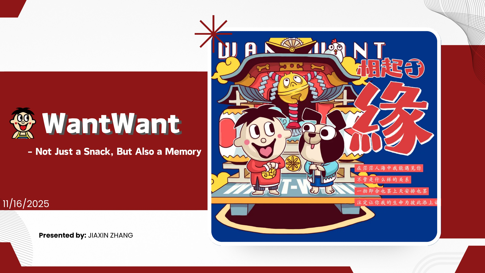
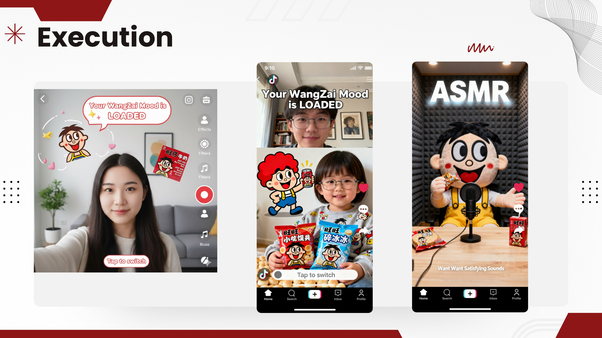
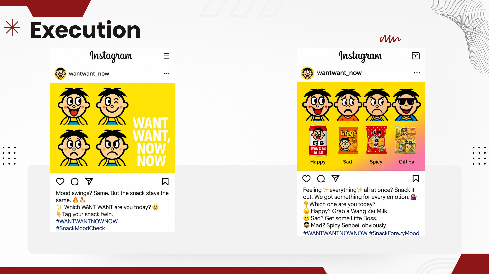

Want Want
Reactivating a childhood icon for the short-video generation.

Familiar, loved—and missing from the feed.
Want Want still carries enormous emotional equity from its iconic commercials, mascot and packaging. But Gen Z now encounters culture through Douyin, RED and Reels, while the brand's strongest memories remain tied to the television era.

Nostalgia only works when it is reactivated.
A childhood favorite cannot live on recognition alone. For nostalgia to influence daily behavior, it has to become expressive, playable and easy to remix inside the media habits people already have.
Want Want Now Now.
The platform brings the brand's original personality into short-form culture through filters, ASMR, stickers, mood content and memes. It is a playful glow-up rather than a rebrand: the same warmth, made present again.

From being remembered to being seen again.
A consistent system of participatory formats turns passive memory into repeatable interaction—building visibility, UGC, renewed purchase consideration and cultural relevance without abandoning what people already love.
From thought
to touchpoint.
- Brand reactivation strategy
- Short-form content system
- Social executions
- UGC toolkit
- Impact framework
“The strongest nostalgia strategy does not recreate the past. It gives a familiar feeling a behavior that belongs to the present.”